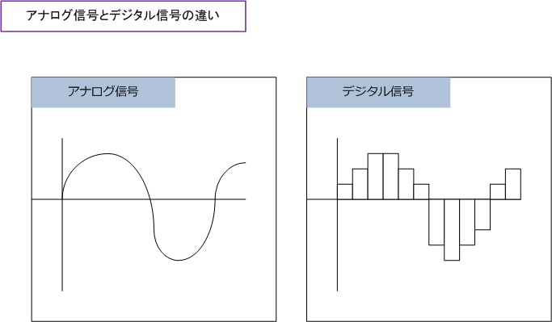
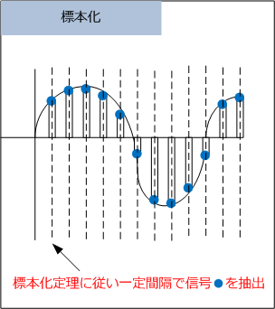
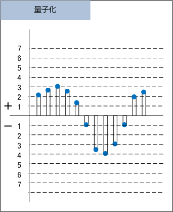
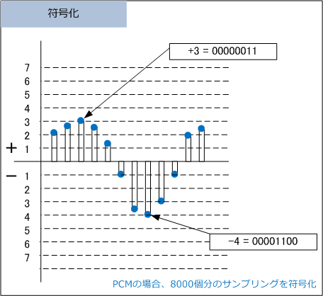

IP Telephony - Analog / Digital
アナログ → デジタル化
IP電話では、音声のアナログ信号をデジタル信号へ変換した後、そのデジタルデータをIPパケットに分割して IPネットワーク上に送出しています。人間の発する声のアナログ信号をデジタル形式に変換するために、次の 3つの処理を行う必要があります。①信号のサンプリング（標本化）、②信号の量子化、③信号の符号化です。

※ アナログ信号は波形のような連続的な値となります。デジタル信号は0、1、2のような離散的な値（明確な客観的な値）となる。
音声の標本化
波形のアナログ信号を、数値のデジタル信号にするために、アナログ信号から一定間隔で信号を抽出します。 これを標本化と言います。この一定間隔が短ければ短いほどアナログ信号の波形を再現しやすくなりますが、 伝送信号の最大周波数の2倍以上の標本化で、アナログ信号の元の波上を再現できるという「標本化定理」に 従うことでアナログ信号の波形を忠実に再現できます。電話の場合、最大周波数が4kHzであるため、標本化 定理に従って4kHz×2=8kHz、つまり標本化レートを1秒間に8000回にすることによって忠実に再現できます。

※ 周波数とは、電気振動などの現象が1秒間に単位時間（ Hzの場合は1秒 ）あたりに繰り返される回数。 ※ 4kHz = 1秒間に4000回（ 4k ）
音声の量子化
先ほど標本化した信号を量子化により数値化を行います。量子化処理では、電圧の範囲を合計16セグメントに 分割（プラス0～7、マイナス0～7）して電圧のメモリに合わせて数値化する。実際のメモリ幅は各数値の間で 例えば0と1との間で細かく値があり、メモリ幅は0に近いほど狭く、7に近いほどメモリ幅が広くなっています。

音声の符号化
量子化により求められた値を符号化により、0と1の2進数（デジタルデータ）に変換する。符号化の方法は 大きく以下の3種類があります。符号化により音声をデジタル化することをコーデック（codec）といます。
◇ PCM（Pulse Code Modulation） 量子化されたデータをそのまま8ビットの2進数に変換する。従って標本化1つあたり(1サンプリングあたり) 8ビットで符号化することから、標本化定理に従うと、8000(1秒あたりの回数)×8(ビット)＝64Kbpsの伝送 速度が音声データのために必要だと分かります。この64Kbpsには音声パケットしか含まれていないことから 別途シグナリングパケットを加算し1通話あたりのトラフィック量を算出可能。安心目安は1通話＝100Kbps。

◇ ADPCM ( Adaptive Differential Pulse Code Modulation ） PCMの改変版。PCMでは量子化ビットが8ビットであるが、ADPCMでは量子化ビットが3～4ビットである。 過去の入力信号から現在の入力信号の値を予測して、その予測値との誤差を情報として送信する。この方式 では、PCMに比べると情報量を減らせられます。※ 符号化ビットレート32KbpsはPHSで採用されています。
◇ CELP （ Code Excited Linear Prediction ) CELPではあらかじめ用意したコードブックを合成して音声を表します。伝送される音声はデジタル化された 音声ではなく、受信したアナログの音声に最も近い音声のコードブックを情報として送信。これにより大幅に 情報量を減らすことできます。※ 当然、ADPCMもCELPも標本化と量子化自体はPCMと同じルールで行います。
| 規格 | 符号化方式 | 最低限必要となる伝送速度 |
|---|---|---|
| G.711 | PCM | 64Kbps |
| G.722 | SB-ADPCM | 48/56/64Kbps |
| G726 | ADPCM | 16/24/32/40Kbps |
| G728 | LD-CELP | 16Kbps |
| G729 | CS-ACELP | 8Kbps |
| G729A | CS-ACELP | 8Kbps |
※ G.711 にはμ-law（ミューロー）とA-law（エーロー）という2つの方式が含まれる。日本の電話で使用されているのは μ-law。
PCMの場合は量子化したデータをそのまま符号化するので、最低限必要とする伝送速度が最も大きくなるが その分だけ詳細に音声データを送信できるので、ADPCMやCELPに比べると音質が良くなります。音質より 音声のトラフィック量を抑え、WAN帯域幅を節約することを優先したい場合はG711ではなくG729を選択。
参考情報：パケット生成の周期が20ミリ秒の時、1パケットに含まれる音声ペイロードのバイト数
CS-ACELP（G.729）による8Kbpsの音声符号化を行うVoIPゲートウェイ機器でパケットを生成する周期が 20ミリ秒の時、1パケットに含まれる音声ペイロードは20バイトであることは、次の計算式で算出できます。
8Kbpは、1秒間に8000ビット（1000バイト）のデータ伝送を意味します。そして、パケット生成の周期が 20ミリ秒ということは、1秒（1000ミリ秒）に50回パケットを出すことを意味します。以上のことから、 1000バイト÷50パケットにより、1パケットに含まれる音声ペイロードが20バイトであることが分かります。
参考情報 ： アナログ電話のシグナリング用語
| 監視シグナリング | 説明 |
|---|---|
| オンフック信号 | 受話器を置いている状態。オンフックではチップワイヤとリングワイヤが分断されて電気信号は流れない。 |
| オフフック信号 | 受話器を上げた状態。オフフックではチップワイヤとリングワイヤが接続されるので電気信号を流せられる。 |
| リンギング | 呼出し。電話会社が交流電流の信号をワイヤの一方に流し、電話機が検出して、呼出し信号が生成される。 |
| 情報シグナリング | 説明 |
|---|---|
| ダイヤルトーン | DT（Dial Tone）。電話会社側が、電話番号を受信できる状態にあることを示す。 |
| ビジー | BT（Busy Tone）。着信先の電話が現在通話中であることを示す。 |
| リングバック | RBT（Ring Back Tone）。着信先の電話で呼出し音が鳴っていることを示す。 |
| 輻輳 | 長距離電話ネットワークがコールを生成できない状態であることを示す。 |
| リオーダー | Reorder。発信側の電話会社がコールを生成できない状態であるこを示す。 |
| レシーバーオフフック | 発信側の受話器が一定時間を超えてオフフックであることを示す。（ハウラー音） |
| 該当番号なし | ダイヤルされた番号が有効な番号ではないことを示す。 |
| アドレスシグナリング | 説明 |
|---|---|
| パルス | ダイヤルパルス。旧型のアナログ電話機（いわゆる黒電話）の回転ダイヤルを回すことで ローカルループ回路の接続と切断を行い、電話番号を示す信号を生成する。パルス信号とも呼ばれる。 |
| デュアルトーン マルチフレクエンシ |
DTMF（Dual-Tone MultiFrequency）。発信者が電話機の数字ボタンを押すたびに、そのボタンに 割り当てられた電気信号の周波数を使用し信号が生成される。トーン信号、プッシュ信号とも呼ばれる。 |